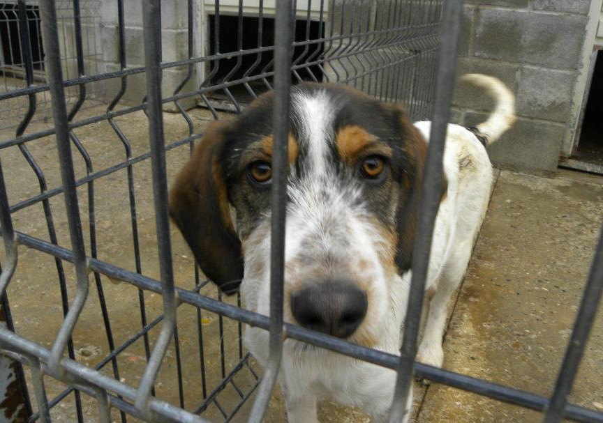
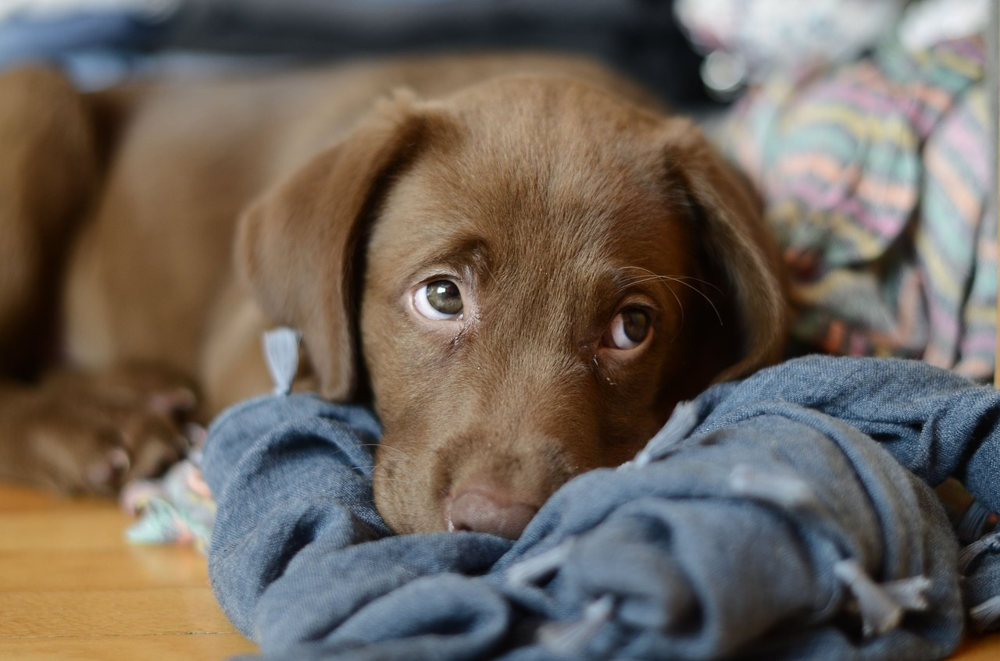
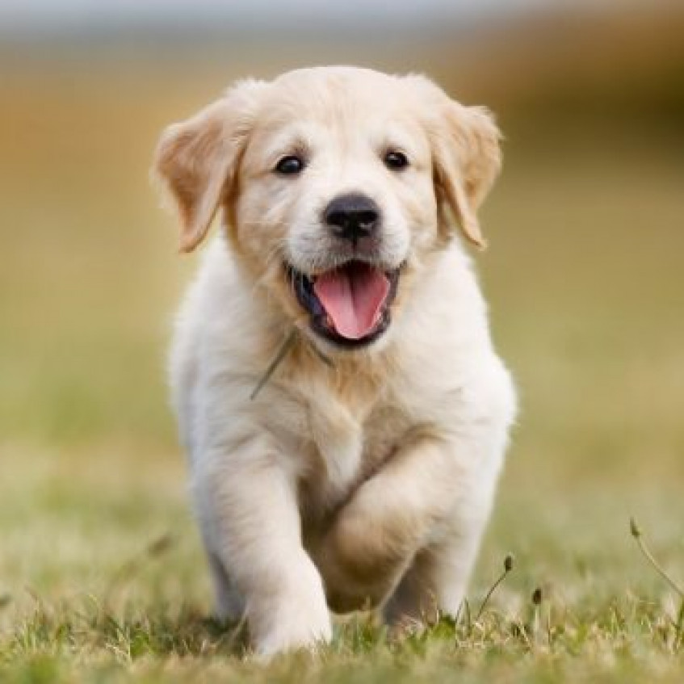
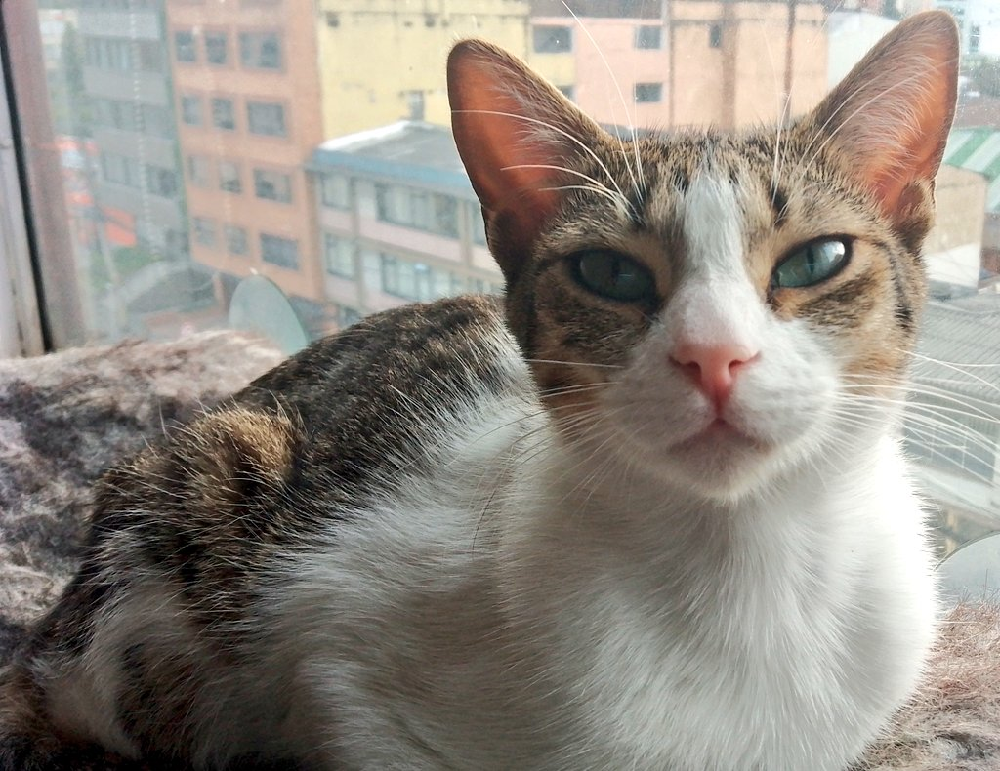
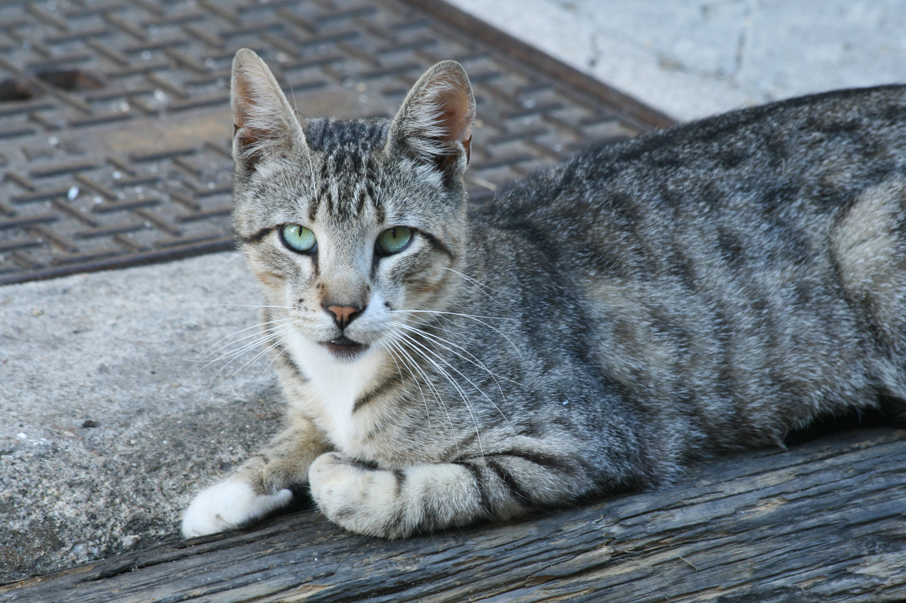
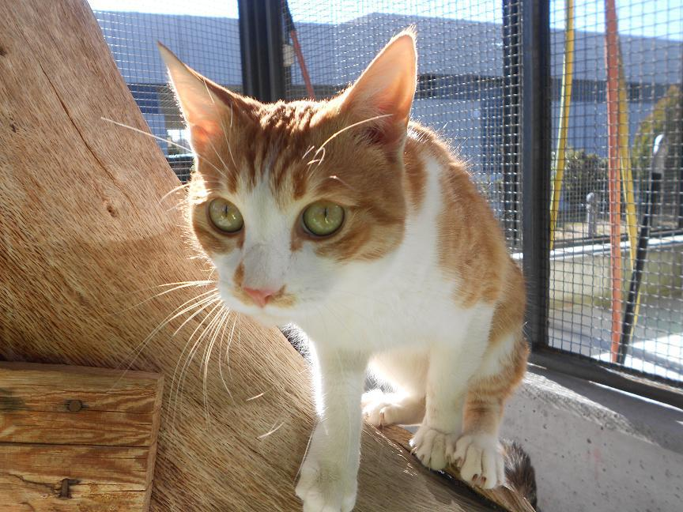
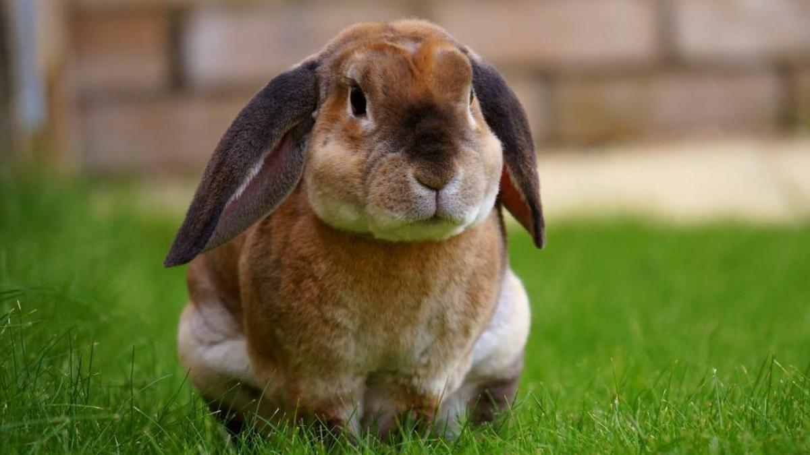
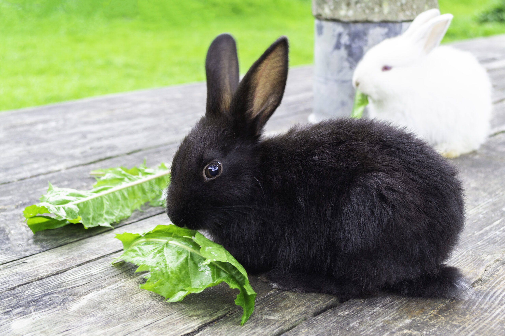
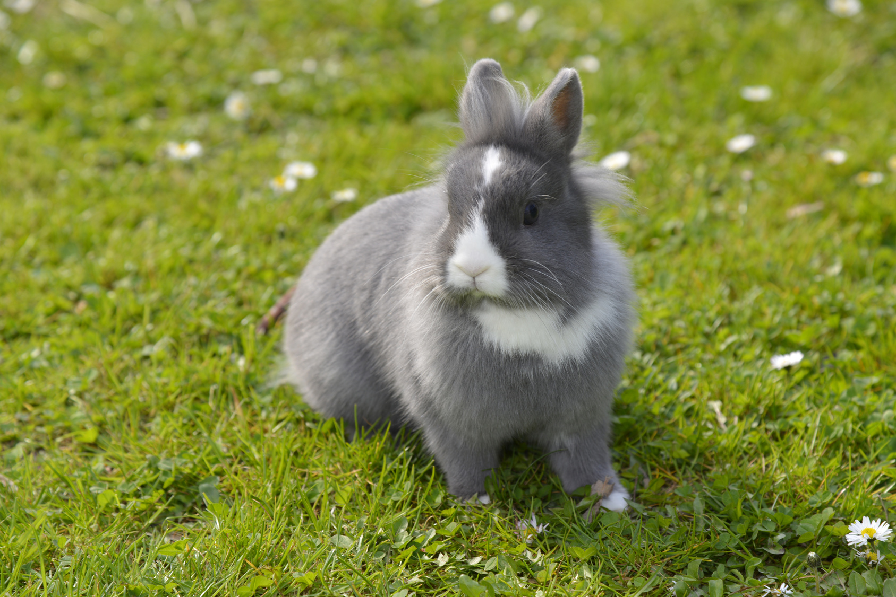

|  |
Bettonven Es un perro macho de raza San Bernardo de 5 años, cariñoso, juguetón y sociable. Le gusta mucho su pelota, come muy bien y no causa problemas. |
|  |
Hera Cachorro hembra de raza labrador, de 3 meses. Sociable, juguetona, nerviosa y muy cariñosa. Siempre busca atención para jugar. |
|  |
Toby Cachorro macho de raza Golden Retriever, de 2 meses. Cariñoso, juguetón, tranquilo y protector. Le gusta jugar con su Frizzbie. |
|  |
Rayo Gato macho de 2 años, protector, territorial juguetón y muy cariñoso. |
|  |
Nube Gata hembre de raza persa de un año. Tranquila,independiente y come mucho. |
|  |
Garfield Gato macho de 3 años,nervioso, juguetón y independiente. |
|  |
Bola Conejo macho de 2 años,nervioso, comilón y juguetón. |
|  |
Bunny Conejo macho de 1 año,nervioso, tímido y asustadizo al principio. |
|  |
Divay Conejo hembre de 6 meses, juguetona, dormilona y revoltosa. |

|
Pepe y Manolo Inseparables hermanos, le gusta piar, estan castrados. |

|
Kike Pájaro macho, le gusta volar y es bastante silencioso. |